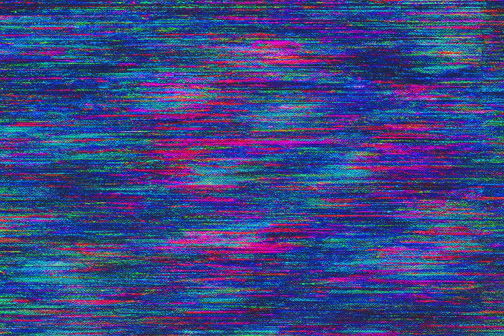
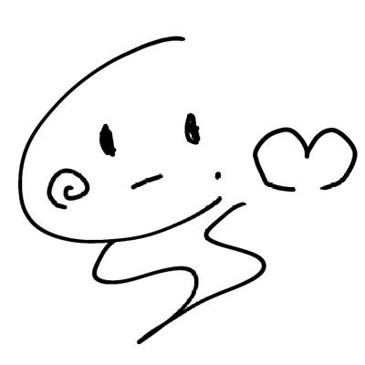

<div class="w-full h-full relative">
  <!-- bg -->
  <div class="absolute inset-0 w-full h-full -z-10">
    
  </div>
  <!-- link -->
  <div class="grid grid-cols-3 auto-rows-min gap-6 w-full h-full px-4 pt-6 overflow-y-auto">
    <!-- profile -->
    <div class="flex col-span-3 p-2 bg-slate-300 border border-fuchsia-300">
      
      <div>
        <p class="text-black text-xl font-bold mb-3 select-none">しろか. (๑• - • .ღ</p>
        <p class="text-black text-sm select-none">浮遊する一般人。</p>
      </div>
    </div>
    <!-- bsky -->
    <a href="https://bsky.app/profile/shiroka.bsky.social" target="_blank" rel="noopener noreferrer"
      class="p-2 bg-gray-950 border border-gray-400"
    >
      <div class="flex justify-center my-4">
        <div class="flex justify-center items-center w-16 h-16 bg-blue-800 rounded-full select-none">
          
        </div>
      </div>
      <p class="text-white text-center mb-1 select-none">ぶるすか</p>
      <div class="flex justify-end">
        <svg xmlns="http://www.w3.org/2000/svg" fill="none" viewBox="0 0 24 24" stroke-width="1.5" stroke="currentColor" class="text-gray-400 size-4">
          <path stroke-linecap="round" stroke-linejoin="round" d="M18 13.5V18a2.25 2.25 0 01-2.25 2.25H6.75A2.25 2.25 0 014.5 18V8.25A2.25 2.25 0 016.75 6h4.5M15.75 4.5h3.75m0 0v3.75m0-3.75L10.5 15" />
        </svg>
      </div>
    </a>
    <!-- github -->
    <a href="https://github.com/shiro-ka" target="_blank" rel="noopener noreferrer"
      class="p-2 bg-gray-950 border border-gray-400"
    >
      <div class="flex justify-center my-4">
        <div class="flex justify-center items-center w-16 h-16 bg-gray-800 rounded-full select-none">
          
        </div>
      </div>
      <p class="text-white text-center mb-1 select-none">ぎはぶ</p>
      <div class="flex justify-end">
        <svg xmlns="http://www.w3.org/2000/svg" fill="none" viewBox="0 0 24 24" stroke-width="1.5" stroke="currentColor" class="text-gray-400 size-4">
          <path stroke-linecap="round" stroke-linejoin="round" d="M18 13.5V18a2.25 2.25 0 01-2.25 2.25H6.75A2.25 2.25 0 014.5 18V8.25A2.25 2.25 0 016.75 6h4.5M15.75 4.5h3.75m0 0v3.75m0-3.75L10.5 15" />
        </svg>
      </div>
    </a>
  </div>
</div>